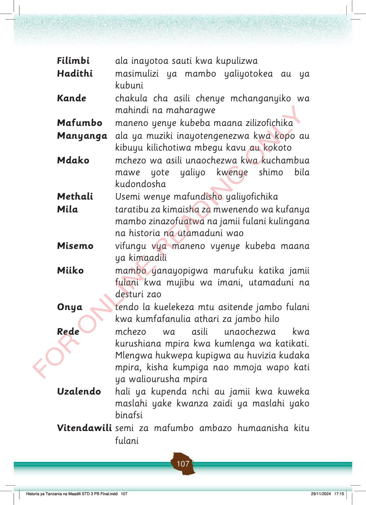

Filimbi
ala inayotoa sauti kwa kupulizwa
Hadithi
masimulizi ya mambo yaliyotokea au ya kubuni
Kande
chakula cha asili chenye mchanganyiko wa mahindi na maharagwe
Mafumbo
maneno yenye kubeba maana zilizofichika
Manyanga
ala ya muziki inayotengenezwa kwa kopo au kibuyu kilichotiwa mbegu kavu au kokoto
Mdako
mchezo wa asili unaochezwa kwa kuchambua mawe yote yaliyo kwenye shimo bila kudondosha
Methali
Usemi wenye mafundisho yaliyofichika
Mila
taratibu za kimaisha za mwenendo wa kufanya mambo zinazofuatwa na jamii fulani kulingana na historia na utamaduni wao
Misemo
vifungu vya maneno vyenye kubeba maana ya kimaadili
Miiko
mambo yanayopigwa marufuku katika jamii fulani kwa mujibu wa imani, utamaduni na desturi zao
Onya
tendo la kuelekeza mtu asitende jambo fulani kwa kumfafanulia athari za jambo hilo
Rede
mchezo wa asili unaochezwa kwa kurushiana mpira kwa kumlenga wa katikati.
Mlengwa hukwepa kupigwa au huvizia kudaka mpira, kisha kumpiga nao mmoja wapo kati ya waliourusha mpira
Uzalendo
hali ya kupenda nchi au jamii kwa kuweka maslahi yake kwanza zaidi ya maslahi yako binafsi
Vitendawili
semi za mafumbo ambazo humaanisha kitu fulani